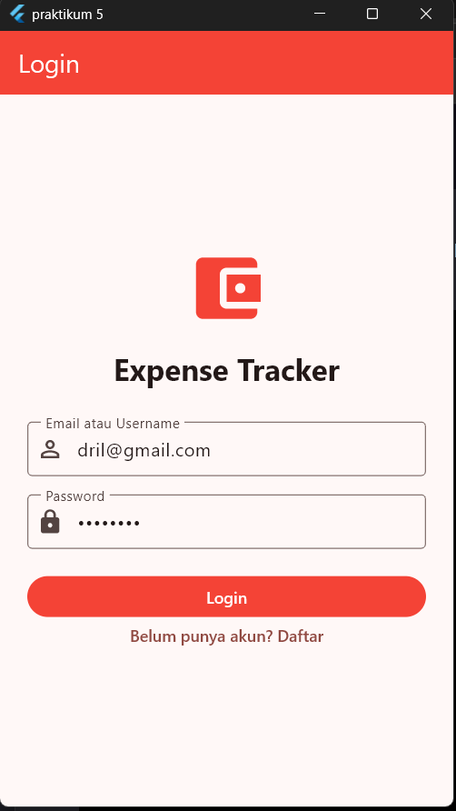
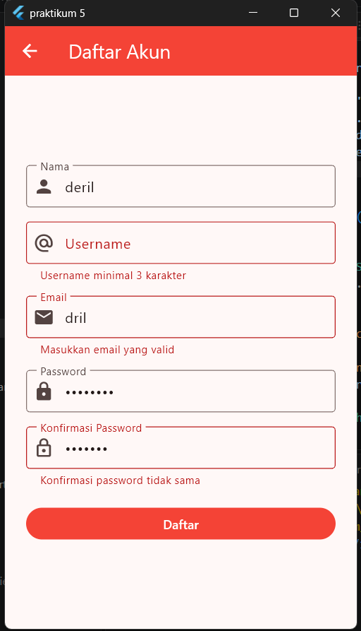
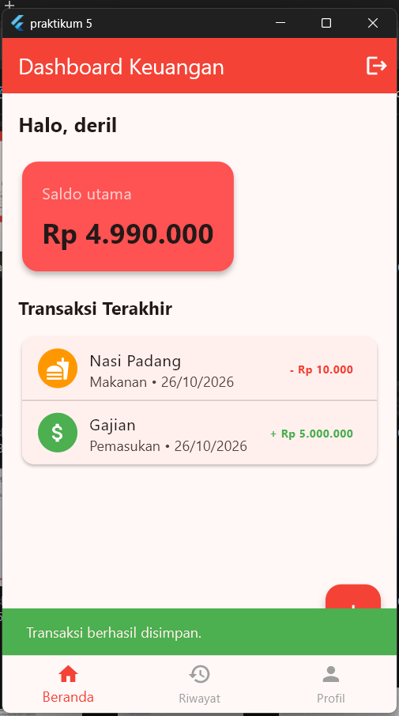
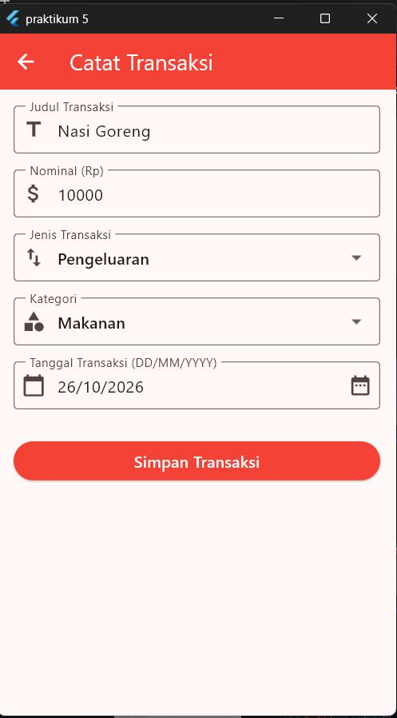
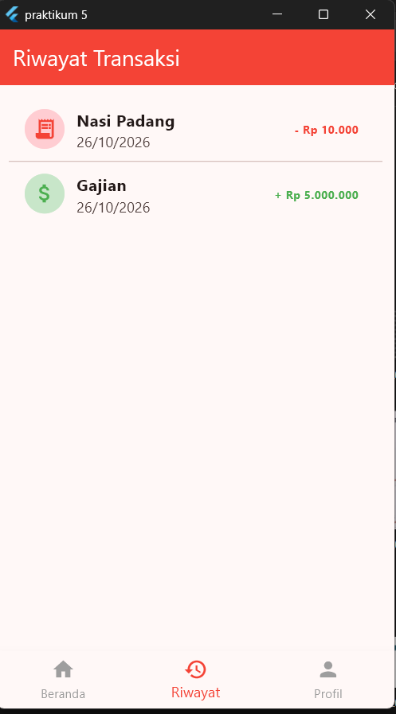
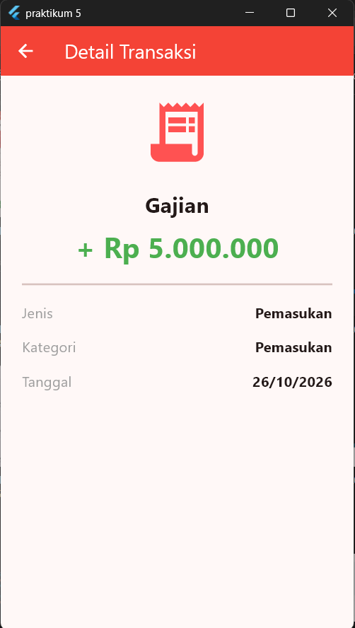
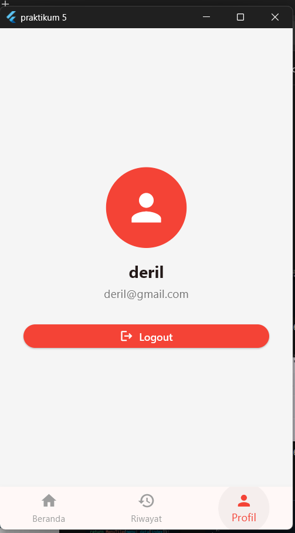

Penggabungan Praktikum 1-5
(Local Storage, Autentikasi, Video &
APK)
Dibuat : Oktober 2026
Repository GitHubTugas praktikum ini menggabungkan seluruh hasil Praktikum 1 sampai 5 menjadi satu aplikasi utuh bernama Expense Tracker. Pada praktikum sebelumnya, aplikasi masih menggunakan data statis (hardcoded) dan belum memiliki sistem autentikasi. Pada tahap akhir ini, aplikasi disempurnakan dengan 4 penambahan utama:
sqflite), sehingga data pengguna dan transaksi tidak hilang saat
aplikasi ditutup.
Desain UI/UX dari praktikum sebelumnya (dashboard, riwayat transaksi, detail transaksi, dan profil) tetap dipertahankan. Yang berubah secara visual hanya halaman Login dan Register yang kini dirancang sebagai gerbang masuk aplikasi.
Struktur folder project_uts dirapikan menjadi tiga lapisan:
models
(struktur data), screens (tampilan), dan services (logika
akses database), ditambah dependensi autentikasi & database pada
pubspec.yaml.
Hirarki Folder project_uts
project_uts/
├── models/
│ ├── app_user.dart # struktur data akun pengguna
│ └── transaction_entry.dart # struktur data satu transaksi
├── screens/
│ ├── login_screen.dart # form login (baru)
│ ├── register_screen.dart # form register (baru)
│ ├── main_screen.dart # shell navigasi (bottom nav)
│ ├── dashboard_screen.dart # ringkasan saldo & transaksi
│ ├── add_transaction_screen.dart
│ ├── history_screen.dart # daftar riwayat transaksi
│ ├── detail_transaction_screen.dart
│ └── profile_screen.dart
├── services/
│ └── app_database.dart # koneksi & query SQLite (singleton)
└── main.dart # entry point & pengecekan sesi login
Folder models berisi representasi data, screens berisi
seluruh tampilan (termasuk dua halaman baru: Login & Register), dan
services berisi satu-satunya titik akses ke database SQLite agar
logika penyimpanan data tidak bercampur dengan kode tampilan.
Dependensi (pubspec.yaml)
dependencies:
flutter:
sdk: flutter
cupertino_icons: ^1.0.8
sqflite: ^2.4.5
sqflite_common_ffi: ^2.4.5
path: ^1.9.1
crypto: ^3.0.7
sqflite digunakan sebagai local storage utama, crypto
untuk hashing password (SHA-256 + salt), dan sqflite_common_ffi
sebagai dukungan database saat aplikasi diuji di Windows/Linux sebelum di-build
menjadi APK.
Seluruh akses database dipusatkan pada satu service,
app_database.dart, menggunakan pola Singleton agar
hanya ada satu koneksi database aktif selama aplikasi berjalan. Dua tabel dibuat:
users untuk akun pengguna dan transactions untuk data
transaksi, yang saling terhubung melalui user_id sebagai foreign key.
class AppDatabase {
AppDatabase._();
static final AppDatabase instance = AppDatabase._();
Database? _database;
Future<Database> get database async {
if (_database != null) return _database!;
final databasePath = path.join(
await getDatabasesPath(),
'praktikum5_expense_tracker.db',
);
_database = await openDatabase(
databasePath,
version: 2,
onCreate: (db, version) async {
await db.execute('''
CREATE TABLE users (
id INTEGER PRIMARY KEY AUTOINCREMENT,
name TEXT NOT NULL,
username TEXT NOT NULL COLLATE NOCASE UNIQUE,
email TEXT NOT NULL COLLATE NOCASE UNIQUE,
password_salt TEXT NOT NULL,
password_hash TEXT NOT NULL
)
''');
await db.execute('''
CREATE TABLE transactions (
id INTEGER PRIMARY KEY AUTOINCREMENT,
user_id INTEGER NOT NULL,
title TEXT NOT NULL,
amount INTEGER NOT NULL CHECK (amount > 0),
category TEXT NOT NULL,
date TEXT NOT NULL,
is_income INTEGER NOT NULL CHECK (is_income IN (0, 1)),
FOREIGN KEY (user_id) REFERENCES users (id) ON DELETE CASCADE
)
''');
},
);
return _database!;
}
}
Dengan arsitektur ini, setiap transaksi yang dicatat pengguna
(addTransaction)
dan setiap akun yang didaftarkan (register) langsung tersimpan secara
permanen di penyimpanan lokal perangkat, bukan lagi di memori sementara (list
statis seperti pada Praktikum 1-4).
Menambahkan dua halaman baru sebagai pintu masuk aplikasi:
login_screen.dart dan register_screen.dart. Password
pengguna tidak disimpan dalam bentuk teks biasa, melainkan
diamankan dengan salting acak lalu di-hash menggunakan SHA-256 sebelum
disimpan ke tabel users.
Future<AppUser> register({
required String name,
required String email,
required String username,
required String password,
}) async {
final db = await database;
// Cek email & username sudah dipakai atau belum
// ...
final salt = _newSalt();
final id = await db.insert('users', {
'name': name.trim(),
'username': username,
'email': email.trim().toLowerCase(),
'password_salt': salt,
'password_hash': _hashPassword(salt, password),
});
return AppUser(id: id, name: name, username: username, email: email);
}
Future<AppUser?> login({
required String identifier,
required String password,
}) async {
final db = await database;
final rows = await db.query(
'users',
where: 'email = ? OR username = ?',
whereArgs: [identifier.toLowerCase(), identifier],
);
if (rows.isEmpty) return null;
final row = rows.first;
if (_hashPassword(row['password_salt']! as String, password)
!= row['password_hash']) return null;
return AppUser.fromRow(row);
}Halaman Login (login_screen.dart)
Pengguna login dengan email atau username. Jika kombinasi identitas dan
password cocok dengan data pada SQLite, pengguna diarahkan masuk ke
MainScreen; jika tidak, ditampilkan pesan kesalahan melalui
SnackBar.
Future<void> _login() async {
if (!_formKey.currentState!.validate()) return;
setState(() => _isLoading = true);
try {
final user = await AppDatabase.instance.login(
identifier: _identifierController.text,
password: _passwordController.text,
);
if (!mounted) return;
if (user == null) {
ScaffoldMessenger.of(context).showSnackBar(
const SnackBar(content: Text('Email/username atau password tidak sesuai.')),
);
} else {
widget.onLogin(user); // kirim data user ke _AppStartupScreen
}
} finally {
if (mounted) setState(() => _isLoading = false);
}
}Halaman Register
(register_screen.dart)
Form register memvalidasi nama, username (minimal 3 karakter), email, serta
password (minimal 8 karakter dan harus cocok dengan konfirmasi password) sebelum
data disimpan ke SQLite melalui AppDatabase.instance.register().
Setelah berhasil, pengguna dikembalikan ke halaman Login dengan email yang sudah
terisi otomatis.
Future<void> _register() async {
if (!_formKey.currentState!.validate()) return;
setState(() => _isLoading = true);
try {
await AppDatabase.instance.register(
name: _nameController.text,
username: _usernameController.text,
email: _emailController.text,
password: _passwordController.text,
);
if (!mounted) return;
Navigator.pop(context, _emailController.text.trim().toLowerCase());
} on AuthException catch (error) {
// Email/username sudah terdaftar
ScaffoldMessenger.of(context).showSnackBar(
SnackBar(content: Text(error.message)),
);
} finally {
if (mounted) setState(() => _isLoading = false);
}
}main.dart)
_AppStartupScreen memastikan koneksi SQLite siap sebelum menampilkan
antarmuka apa pun. Jika database belum siap, ditampilkan indikator loading; jika
gagal dibuka, ditampilkan halaman error dengan tombol "Coba lagi". Setelah
database siap dan belum ada pengguna yang login (_user == null),
aplikasi menampilkan LoginScreen; begitu login berhasil, data
AppUser disimpan di state dan aplikasi berpindah ke
MainScreen tanpa kehilangan histori navigasi dari Praktikum 5.
final user = _user;
if (user == null) {
return LoginScreen(
onLogin: (loggedInUser) {
setState(() => _user = loggedInUser);
},
);
}
return MainScreen(
user: user,
onLogout: () => setState(() => _user = null),
);sqflite) menggantikan data statis Praktikum 1-5.flutter build apk (lihat di bawah).
Aplikasi akhir terdiri dari tujuh layar: Login, Register, Dashboard, Catat Transaksi, Riwayat Transaksi, Detail Transaksi, dan Profil.







Video penjelasan kode program dan demo aplikasi: mulai dari register akun baru, login, mencatat transaksi, melihat riwayat dan detail transaksi, hingga logout.
Link alternatif: https://youtu.be/BGzwJl2lLKY
Aplikasi telah di-build menjadi file APK menggunakan perintah:
flutter build apk --releaseAPK hasil build diupload ke github tab realese pada link repo github yg sama dengan project ini.
Tahap akhir ini melengkapi aplikasi Expense Tracker dari sekadar prototipe UI dengan data statis (Praktikum 1-5) menjadi aplikasi fungsional yang siap digunakan sehari-hari.
user_id.MainScreen beserta Named Routes dan Bottom Navigation Bar dari
Praktikum 5 tetap berfungsi tanpa perubahan struktur, membuktikan fitur baru
dapat ditambahkan tanpa merombak arsitektur yang sudah ada.